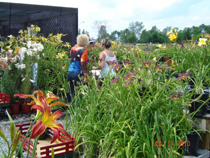
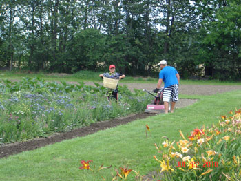
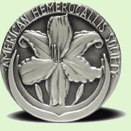

We hope you enjoy your visit to our website.
At our location you will find a perennial paradise featuring a
wonderful assortment of more than 700 registered daylilies.
All
cultivars are very unique in their own way in colour and form.
Our daylilies are direct from the hybridizer and increases are sold from our parent plants. Whatever your budget may be, we believe daylilies are the perfect perennial for every yard, garden, perennial bed and landscape solution.
Plant Habit
The modern daylily is a long way from its origins. As interesting as it is, we will not go into its history. (“The Gardener’s Guide to Growing Daylilies by Diana Grenfell” is a good reference book.)
Please note that the modern daylily is not to be confused with the orange ditch lily. The ditch lily is quite tall, beautiful and has a very invasive root system. Due to its odd number of chromosomes (33), it cannot produce viable seed. The modern daylily has a clumping habit, an even number of chromosomes and does produce viable seed.
To add to the confusion a daylily is not really a lily. Back in the 1700-1800s the daylily was placed in the lily family.
A re-evaluation of this decision in the 1900s took it out of this family and placed it in a new family of its own called Hemerocallis (from the Greek hemera meaning a day and kallos meaning beauty). However the Hemerocallis name has never really “caught on” and to this day it is generally known as the daylily.
Due to extensive hybridizing by some very dedicated
growers the daylily has a wide variety of colours, flower size,
heights, and combinations which are almost endless. The only
colours not recognized as pure are blue and white. We have some
whites that are very close to pure white and some others with
near blue eyes.

The daylily is almost the perfect perennial. With its endless variety of characteristics it fits all gardens. It has very few diseases or predators. Although totally edible, the deer have not touched our daylilies yet!
We have had numerous complaints about daylilies (not ours) and it has turned out they are normally tissue culture.
Bloom Habit
In our zone 4b the very early will bloom about mid June and the remainder of the daylilies will follow until frost. It is true that a single bloom lasts one day! However, when a daylily has numerous scapes (flower stems) and 20 to 40 buds per scape, you can enjoy a spectacular bloom over a long period of time. Extended bloom means that the daylily continues to produce scapes and blooms over a long period. Reblooming daylilies will bloom in season and then bloom again, usually in the fall. As with most plants the rebloom is not as spectacular as the original. Some daylilies which are classed as re-bloomers do not rebloom in our zone 4b due to the shorter season. Rebloom in Florida is quite different than in Canada. When we say the daylily reblooms, it does so for us in a normal season.

Planting
Tips
Daylilies are very flexible as far as planting times and soil conditions. They can be split and planted from early spring to about Sept. 1 in our zone 4b and to Sept.15 in zone 6. (You can judge for yourself according to your zone.) I would always water them in well when planting, especially in hot weather. High humus, well drained soil is preferred but will survive quite well in adverse conditions. If you give them good soil, water and fertilizer they will reward you over and over again.
We feed our garden in late spring, and once in late July. Do not fertilize too late in the season as new growth is sensitive to winter kill. When we plant daylilies in the garden I put about 1/3 of a bag of well rotted cow manure in the hole, mix with the soil and Wow do they grow!

Some Major Daylily Awards
- AM: Award of Merit - Ten outstanding daylilies of the year.
- SSM: Stout Silver Medal - Highest annual award given to a daylily.
- ATG: Annie T. Giles Award - Best small flower.
- DCS: Don C. Stevens Award - Best eyed or banded flower.
- DFM: Don Fisher Memorial Cup - Best miniature.
- IMA: Ida Munson Award - Best double.
- LAA: Lenington All-American Award - Best performer in all areas.
- LEP: L. Ernest Plouf Award - Most fragrant dormant